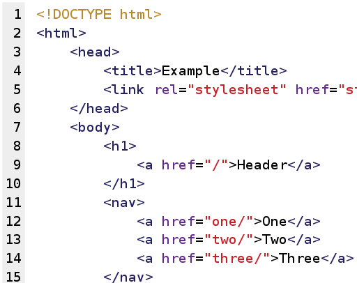

HTML
HTML
A HTML (angolul: HyperText Markup Language, „hiperszöveges jelölőnyelv”) egy leíró nyelv, melyet weboldalak készítéséhez fejlesztettek ki, és mára már internetes szabvánnyá vált a W3C (World Wide Web Consortium) támogatásával. Az aktuális változata az 5, mely az SGML általános jelölőnyelv egy konkrét alkalmazása (azaz minden 5-ös HTML dokumentum egyben az SGML dokumentumszabványnak is meg kell hogy feleljen). Ezt tervek szerint lassan kiszorította volna az XHTML, amely a szintén SGML alapú XML leíró nyelven alapu
Használata
HTML általában szöveges állományokban található meg olyan számítógépeken, melyek az internethez kapcsolódnak. Ezek az állományok tartalmazzák azokat a szimbólumokat, amelyek a megjelenítő programnak leírják, hogyan is kell megjeleníteni illetve feldolgozni az adott állomány tartalmát. Megjelenítő program lehet egy webböngésző (angolul: web browser), aural böngésző (olyan, amelyik a felhasználónak felolvassa a megjelenítendő szöveget), braille olvasó, amely konvertálja a szöveget braille „formátumba”, levelező program (mint például: Mozilla Thunderbird, Microsoft Outlook, Eudora, Claws Mail stb.), valamint egyéb eszközök, például mobiltelefon.
Felépités
Egy HTML állomány három fő részre bontható:
- 1. A Dokumentumtípus-definíció az állomány legelején, pl:
DOCTYPE html
- 2. a HTML fejléc head , ami technikai és dokumentációs adatokat tartalmaz, amelyeket az internet böngésző nem jelenít meg, tehát átlag felhasználó ezeket nem látja
- 3. a HTML törzs body amely a megjelenítendő információkat tartalmazza.
Tehát egy internetes oldal alapszerkezete a következőképpen nézhet ki:

HTML5
A HTML5 a következő, jelentősen átdolgozott változata a HTML-nek (Hypertext Markup Language), a web fő jelölőnyelvének. Egyik fő tervezési célja, hogy a webes alkalmazásokhoz ne legyen szükség pluginek (pl. Adobe Flash, Microsoft Silverlight, Sun JavaFX) telepítésére. A specifikáció a HTML4 és az XHTML1 új verzióját jelenti, a hozzájuk tartozó DOM2 HTML API-val együtt. A HTML5 specifikációban leírt formátumba történő migráció HTML4-ről, vagy XHTML1-ről a legtöbb esetben egyszerű, mivel a visszamenőleges kompatibilitás biztosított. A specifikáció a közeljövőben támogatni fogja a Web Forms 2.0 specifikációt is. HTML5-ben lehetőség van audio és videofájlok beillesztésére, erre a célra külön tagek vannak audio Továbbá létezik egy úgynevezett canvas tag, mely egy vászon. Erre Javascript segítségével lehet rajzolni, vagy képet beilleszteni. Fontos megemlíteni, hogy a HTML5-ből kivették az elrendezés megadó tulajdonságokat. Ezeket CSS-ben kell megadni.